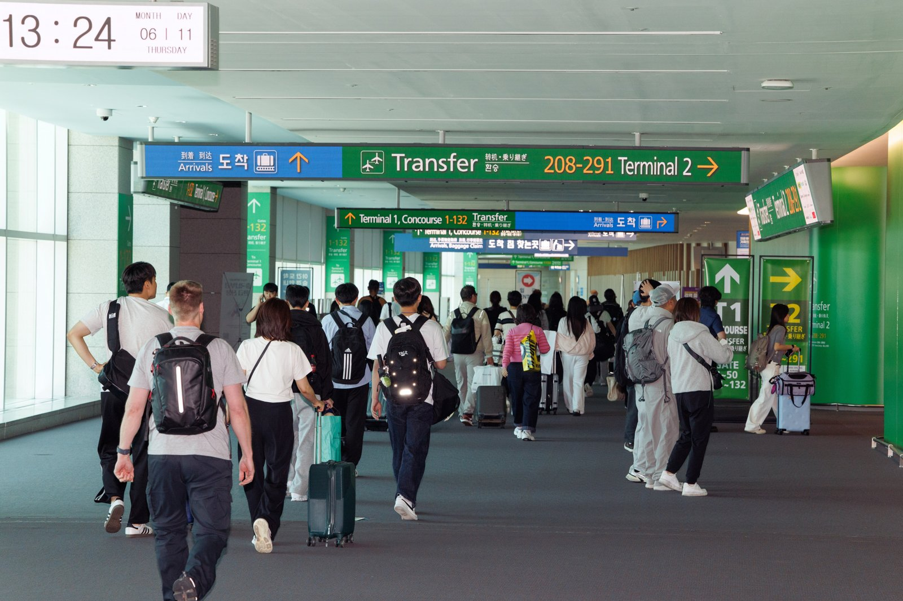
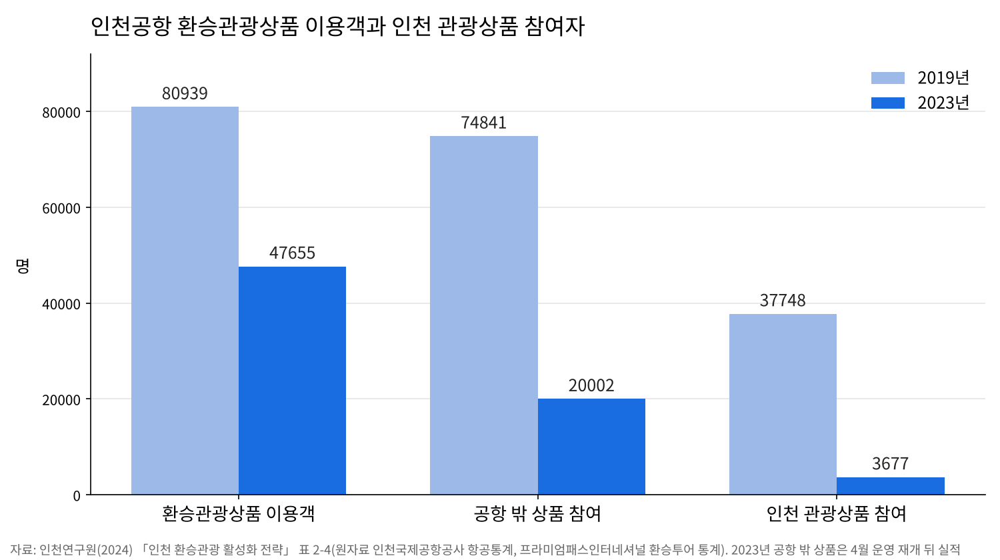
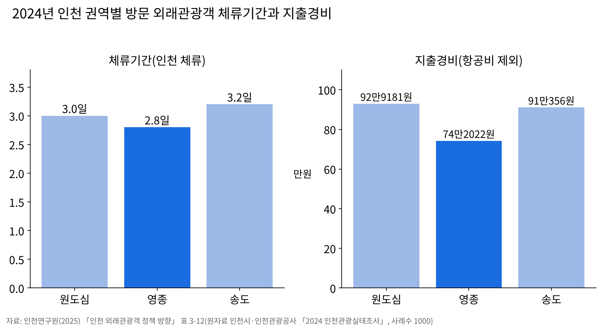

[공항과 경제] 환승객 숙박 100달러 지원, 2023년 인천 투어 3677명
인천시·인천관광공사와 공항공사 50달러씩, 숙박 묶은 6개 코스
2024년 영종 들른 외래관광객 체류 2.8일·지출 74만원
AI경제저널=김갑봉 기자 | 인천시(시장 박찬대)와 인천관광공사(사장 유지상)가 인천공항 환승객 숙박비를 지원하고 있다. 인천국제공항공사(공항공사)와 함께하는 사업이다. 스톱오버 관광상품으로 인천에 묵는 환승객 1인당 100달러이고, 지원은 오는 12월 31일까지다.
100달러는 인천시·인천관광공사와 공항공사가 50달러씩 나눠 낸다. 공항공사는 늘어난 환승객이 지역 관광산업 활성화로 이어지는 선순환 구조가 생기길 기대한다고 밝혔다.
인천연구원 2024년 보고서를 보면 2023년 기준 인천공항 환승객은 720만4738명이다. 이 가운데 환승투어로 인천 관광상품을 고른 사람은 3677명이다.

숙박 묶은 인천 코스 6개, 1인 100달러
공항공사는 지난 10월 12일, 인천관광공사는 13일 이 사업을 발표했다. 지원 기간은 10월 1일부터다.
환승객은 스톱오버 누리집에서 인천 관광상품 6개 코스 가운데 하나를 고른다. 환승 항공권을 증빙하면 정상가에서 100달러를 뺀 값에 상품을 이용한다. 정해진 단체 일정은 없다.
인천관광공사 숙소 목록은 파라다이스시티, 인스파이어 리조트, 이비스·베스트웨스턴 공항 호텔, 하버파크호텔, 송도지역 호텔 등이다.
참가자는 1만원 상당 와우패스 교통카드도 받는다. 공항공사는 10월 넷째 주부터 12월까지 공항 체류 24시간 이내 환승객에게 라운지 무료 쿠폰 약 2400매를 선착순으로 준다.
유지상 인천관광공사 사장은 "이번 협업은 인천공항의 환승 수요를 인천의 숙박과 관광으로 연결하는 데 의미가 있다"고 밝혔다.
상반기 환승객 424만명, 18.1% 증가
공항공사 집계로 올해 상반기 인천공항 국제선 여객은 3839만명이다. 같은 기간 환승객은 424만4992명이다. 지난해 같은 기간 359만5660명보다 18.1% 많다.
공항공사는 이 증가율이 국제선 여객 증가율 6.3%의 약 3배라고 밝혔다. 공항공사는 8월 자료에서 미국과 이란의 전쟁을 까닭으로 들었다. 두바이 등 중동 공항의 환승 기능이 약해졌다는 설명이다.
지난해 흐름은 반대다. 2025년 환승객은 804만6572명으로 2024년 823만4722명보다 2.3% 적다. 2019년 838만9136명의 95.9% 수준이다.
공항공사는 중국·동남아발 미주·유럽 직항이 늘었다고 짚었다. 러시아 영공을 지날 수 있는 중국 항공사의 반사 이익도 꼽았다.
인천 상품 3677명, 2019년 10분의 1
인천연구원 황희정 연구위원과 성민정 전임연구원은 2024년 「인천 환승관광 활성화 전략」을 냈다. 이 보고서의 시장 규모는 추정치다. 공항공사 항공통계에 2017년 항공여객 행동특성조사 비율을 적용한 값이다.
연구진 추정으로 2023년 공항 밖에 나가 관광한 환승객은 약 107만명이다. 환승객의 14.8%다. 이 가운데 인천을 찾은 사람은 4.9%인 약 5만2000명이다.
2023년 환승관광상품 이용객 4만7655명 가운데 공항 밖으로 나간 사람은 2만2명이다. 서울 상품이 1만3263명, 인천 상품이 3677명이다. 2019년 인천 상품 참여자는 3만7748명이었다. 운영을 4월에야 다시 연 2023년 실적은 그 9.7% 수준이다(AI경제저널 계산).

김광옥 등 다섯 연구자의 2015년 『한국항공운항학회지』 논문도 있다. 바탕은 문화체육관광부 2014년 여객행동특성조사다. 인천공항 외국인 환승객 750명 가운데 무료 환승투어를 이용한 비율은 13.4%, 유료 환승투어는 3.3%였다.
2024년 영종 방문객 체류 2.8일
인천연구원 황희정·성민정 연구진은 2025년 보고서 「인천 외래관광객 정책 방향」을 냈다. 이 보고서에서 2023년 방한 외래관광객의 인천 방문율은 6.5%다. 2019년에는 8.0%였다.
「2024 인천관광실태조사」는 인천시와 인천관광공사가 외래관광객 1000명을 조사한 결과다.
이 조사에서 영종을 들른 외래관광객은 인천에 평균 2.8일 머물고 74만2022원을 쓴다. 원도심을 들른 이는 3.0일에 92만9181원, 송도를 들른 이는 3.2일에 91만356원이다. 항공비는 뺀 값이다. 세 권역 가운데 영종 방문객의 체류가 가장 짧고 지출도 가장 적다.
인천연구원 연구진은 권역 자체의 실태 평가는 아니고 표본도 실제와 다를 수 있다는 단서를 단다.

인천경제자유구역청과 인천관광공사는 지난 10월 10일 영종 씨사이드파크에서 「I♥FEsta 영종」을 열었다.
인천관광공사는 행사장에 영종 하늘도시 상권과 잇는 딜리버리존을 두고 「인천e지」 5000원 할인 쿠폰을 나눠 줬다. 다국어 통역 인력 「투어프렌즈」도 둬 외래관광객 안내를 도왔다.
영종구 체류형 관광 협의, 무사증 건의
영종구(구청장 손화정)는 지난 9월 28일 유지상 인천관광공사 사장과 간담회를 열었다. 주요 의제는 국내외·환승 관광객의 영종 체류형 관광과 시티투어버스 영종 코스 확대 등이다. 마이스(MICE, 기업회의·포상관광·국제회의·전시) 유치도 의제다.
손 구청장은 지난 7월 14일 인천 기초단체 규제혁신 간담회에 참석했다. 그 자리에서 박용진 대통령 직속 규제합리화위원회 부위원장에게 환승객 72시간 무사증 입국 제도를 고쳐 달라고 건의했다.
영종구는 이 제도가 단체 관광객에만 적용된다며 개별 여행 흐름에 맞추고 허가 시간을 국제 수준으로 늘리자고 했다. 인천연구원 2024년 보고서는 이 제도의 대상을 인천공항 환승관광프로그램 참가자로 적는다. 허용 범위는 72시간 이내 환승관광이다.
손 구청장은 지난 10월 8일 취임 100일 회견에서 영종 관광특구 지정과 환승관광 활성화를 과제로 내놨다.
인천연구원 2024년 보고서가 내놓은 전략은 셋이다. 개별 환승관광객을 위한 영종 환승관광전략지구, 인천시가 이끄는 섬·바다 매력화, 공항공사가 이끄는 공항 매력화다.
참고문헌
- 김광옥·김기웅·김광일·김남선·박성식, 「항공여객 특성분석을 통한 환승시설·서비스 및 환승투어 만족도 제고 연구」, 『한국항공운항학회지』 23권 2호, 한국항공운항학회, 2015년 6월, 89~97쪽, https://doi.org/10.12985/ksaa.2015.23.2.089
- 황희정·성민정, 「인천 환승관광 활성화 전략」(2024 현안연구), 인천연구원, 2024, https://www.ii.re.kr/storage/report/BB0000038254.pdf
- 황희정·성민정, 「인천 외래관광객 정책 방향」(2025 정책연구), 인천연구원, 2025, https://www.ii.re.kr/storage/report/BB0000043433.pdf
- "인천공항공사, 환승객 대상 인천지역 관광 활성화 프로모션 시행", 인천국제공항공사, 2026.10.12, https://www.airport.kr/co_ko/664/subview.do (보도자료 게시판)
- "인천공항, 개항이후 처음으로 상반기 국제여객 세계 1위 달성", 인천국제공항공사, 2026.08.13, https://www.airport.kr/co_ko/664/subview.do (보도자료 게시판)
- "인천공항, 지난해 역대 최다 항공운송실적 달성", 인천국제공항공사, 2026.01.26, https://www.airport.kr/co_ko/664/subview.do (보도자료 게시판)
- "인천에서 하루 더! 환승객의 여행 부담 줄여준다", 인천관광공사, 2026.10.13, https://www.ito.or.kr/main/bbs/bbsMsgDetail.do?msg_seq=1776&bcd=report
- "'가을 바다 수놓은 록과 국악, K-디저트의 향연'… 'I♥FEsta 영종' 성황리 종료", 인천관광공사, 2026.10.12, https://www.ito.or.kr/main/bbs/bbsMsgDetail.do?msg_seq=1774&bcd=report
- "손화정 구청장, 인천관광공사와 '관광도시 영종' 발전 방안 논의", 인천 영종구, 2026.09.29, https://www.yeongjong.go.kr (보도자료 게시판)
- "손화정 구청장, '대통령 직속 규제위'에 영종 5대 규제 개혁 강력 건의", 인천 영종구, 2026.07.15, https://www.yeongjong.go.kr (보도자료 게시판)
- "출범 100일 맞은 손화정號, '대한민국 공항경제 수도 영종' 청사진 제시", 인천 영종구, 2026.10.08, https://www.yeongjong.go.kr (보도자료 게시판)
[사진 출처]
- [사진 1] 인천국제공항공사
- [사진 2] 인천관광공사
- [사진 3] 영종구
※ 이 기사는 인공지능기자 위민아이(Wemin_AI)와 협력해 작성했습니다.
관련기사
- 허브는 밀도로 이긴다, 인천 환승 598만명
- 두바이 막힌 사이 유럽 환승 63%↑, 인천공항 빌린 환승객 붙잡아야
- [글로벌 인천공항⑬] 인천공항 44% 외국인, 연말 끝나는 비자 특례 상설로
- [항공] 같은 강풍에 김포 9분·제주 4분…공항 장비가 지연 갈랐다
저작권자 © AI경제저널 무단전재 및 재배포, AI학습 및 활용 금지